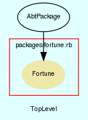

|  |
fortune.rb
Fortune package.
Created by Eric D. Schabell <erics@abtlinux.org> Copyright 2006, GPL.
This file is part of AbTLinux.
AbTLinux is free software; you can redistribute it and/or modify it under the terms of the GNU General Public License as published by the Free Software Foundation; either version 2 of the License, or (at your option) any later version.
AbTLinux is distributed in the hope that it will be useful, but WITHOUT ANY WARRANTY; without even the implied warranty of MERCHANTABILITY or FITNESS FOR A PARTICULAR PURPOSE. See the GNU General Public License for more details.
You should have received a copy of the GNU General Public License along with AbTLinux; if not, write to the Free Software Foundation, Inc., 51 Franklin St, Fifth Floor, Boston, MA 02110-1301 USA
Constructor for an AbtPackage, requires all the packge details.
PARAM Hash - hash containing all pacakge data.
[ show source ]
# File packages/fortune.rb, line 69
69: def initialize()
70: super($packageData)
71: end
Overriding configure.
PARAM boolean - true if you want to see the verbose output, otherwise false. Defaults to true.
RETURN boolean - returns true.
[ show source ]
# File packages/fortune.rb, line 81
81: def configure(verbose=true)
82: return true # nothing to do, standard makefile is fine.
83: end